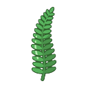
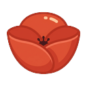
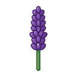
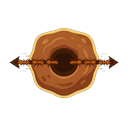
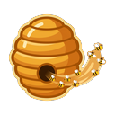
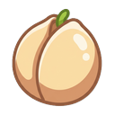

A casual tap-to-blast puzzle game, and an analysis of the two games I studied to design it.
I build and ship games. Five of them, made alone over about eight months, three published so far. So I came at this brief the way I come at my own projects: decide what the player does with their thumb, then work outward until the economy and the art direction agree with it.
The document has two halves. Part I analyses Royal Match and Toon Blast across the seven requested dimensions. Parts II to VIII detail the design of Bloomrise. Its core is deliberately conventional; the work is in the content set, the economy, and a slow meter that sits beside the power-up ladder instead of inside it.
There is a working prototype of the core mechanic at the end of this page. Every number I quote about the mechanic came out of it, including the ones that told me I was wrong.
Part III is the schedule and Part IV is the catalogue. They cover the same ground from two directions on purpose, because a level designer and an artist need different documents.
Before the seven dimensions, one observation about the brief itself, because it decided everything downstream.
Dream Games does not ship a tap-to-blast game. Royal Match and Royal Kingdom are both swap match-3. Royal Kingdom differs from Royal Match in its meta layer and its boss levels, not in what the player's finger does. The only blast title named in this brief is Toon Blast, which belongs to Peak.
So the exercise is not "design a fourth match-3 for a company that already makes match-3." It is closer to: take a mechanic Dream has not shipped, and build it to the standard Dream is known for. That framing decided where I spent the risk. Bloomrise's theme is warm, character-led and deliberately familiar, and so is its core. The one thing I added rather than borrowed is a slow meter that sits beside the power-up ladder instead of inside it.
| Game | Progress | Played | Used as |
|---|---|---|---|
| Royal Match | Level 130 | 8h 30m | Main reference for meta structure, progression pacing and where offers appear. |
| Toon Blast | Level 30 | 50m | Main reference for the core verb: cluster selection, cascade feel, power-up thresholds. |
| Royal Kingdom | Level 30 | 50m | Played to establish where it diverges from Royal Match. |
These are all of it, with the times the store recorded. I would rather give the real list than a curated one.
| Game | Time | Game | Time |
|---|---|---|---|
| Royal Match | 8h 30m | Ballz | 20m |
| Cube Escape: Paradox | 2h | Helix Jump | 13m |
| Stack | 1h 24m | Bricks | 10m |
| Arrows | 1h 6m | Everblast | 10m |
| Royal Kingdom | 50m | Stack Blocks | 8m |
| Toon Blast | 50m | Traffic Hero | 7m |
| Nonogram | 25m | Bricky Boy | 6m |
| Color Switch | 25m | Two Dots | 5m |
The shape of that list is a developer's, not a player's. Most of those sessions are short because I installed the game to find out how a specific mechanic was built, played until I understood it, and stopped. Royal Match is the one exception, and it is the only title here I have played the way its audience plays it.
What the list does show is the line from what I studied to what I shipped. Stack is the game Stackline is a deliberate clone of, and I have said so in this document before naming the source here. Ballz, Bricks, Everblast, Stack Blocks and Bricky Boy are the brick-breakers I went through before building Brick Multiplier. Cube Escape: Paradox is Rusty Lake's, and I went there to read how point-and-click structure holds up on a phone, because I want to bring October to mobile as well. Nothing in my install history is there by accident.
The honest limit: this is not the profile of someone embedded in mobile free-to-play, and I am not going to claim market literacy I do not have. My knowledge of this genre is a maker's knowledge, built from taking mechanics apart and rebuilding them, and it is thinner on the commercial side than on the design side. That is the gap I would be closing in the first month, and it is why Part VI states its economy assumptions out loud.
The two games ask for different kinds of decisions.
Royal Match asks you to find a shape. You swap two adjacent tiles, and the move's value lies in the geometry you produce. Four in a line makes a Rocket. Four in a square makes a Propeller. Five in an L or T makes a TNT. Five in a line makes a Light Ball. The board is full of legal moves and most of them are worth nothing, so the skill is scanning for the few that are.
Toon Blast asks you to find a size. Any two adjacent cubes of the same colour are legal. The question is never whether a move is allowed, only whether the cluster is big enough yet. Five cubes gives a Rocket, seven or eight a Bomb, nine a Disco Ball.
The consequence is that a blast player always knows how close they are. The cluster is sitting there and it can be counted. A swap player often discovers a power-up rather than planning one. So blast trades scanning difficulty for planning transparency, and the pressure moves from perception to patience. Taking a cluster early is always visibly wasteful, and the player feels that every turn.
That is the observation Bloomrise is built on. If patience is where a blast player's tension already lives, then the interesting place to add design is the reward you are being patient for.
| Royal Match | Created by | Toon Blast | Created by |
|---|---|---|---|
| Rocket | 4 in a line | Rocket | 5 cubes |
| Propeller | 4 in a square | Bomb | 7–8 cubes |
| TNT | 5 in an L or T | Disco Ball | 9 cubes |
| Light Ball | 5 in a line | – | – |
Royal Match carries four power-ups to Toon Blast's three, and it needs the extra one. When creation is shape-driven, each distinct shape has to pay differently or the geometry stops being interesting. Toon Blast runs a single axis instead, cluster size, which is a cleaner thing to hold in your head but caps the vocabulary at three.
Both games then get most of their depth from how power-ups combine, and both put the same kind of thing at the top of the ladder. Royal Match's Light Ball, swiped into another power-up, converts match items into that power-up. Toon Blast's Disco Ball clears every cube of one colour on its own, and scatters rockets or bombs across the board when it is combined with one. Neither is simply a bigger explosion. Combined, each acts on the power-up system itself, which is why doubling them clears everything and why nothing needs to sit above them.
| Level | Element | What it teaches |
|---|---|---|
| 1 | Balloons | Adjacency clears things that are not cubes |
| 4 | Crates | Some things take more than one hit |
| 11 | Bubbles | An obstacle can sit on top of a playable tile |
| 21 | Magic Hats | Some things empty out instead of breaking |
| 31 | Colored Balloons | Colour becomes a constraint, not just a match key |
| 41 | Ducks | Gravity goals: bring something down |
| 51 | Light Bulbs | Two-hit targets that are also goal items |
| 61 | Can Toss | Nine hits, so power-ups stop being optional |
| 81 | Soda Bottle | Colour-specific hits, four or five deep |
I have played to level 30, so the first four rows are mine and the rest are collated from community documentation and consistent across sources. Nine elements inside the first 81 levels, then a long gap before the next wave. The teaching happens where churn is highest and the audience is largest, and the enormous level count behind it is carried by recombining what the player already knows. That is an efficient way to spend art and design budget, and I have copied the shape directly: nine elements across Bloomrise's first fifty, then composition.
Royal Match segments the same problem through areas. Each is a themed room with its own restoration tasks, each level completed yields one star, stars are spent on those tasks, and finishing a room opens the next. The campaign is therefore always cut into chapters small enough to feel finishable. You are never more than a few levels away from completing something, which is a better retention instrument than any single feature on the home screen.
In a swap game, difficulty is mostly about denying shapes. In a blast game it is about denying contiguity, and that changes which dials matter.
| Dial | Effect in a blast game | Cost of using it |
|---|---|---|
| Colour count | The strongest and quietest lever. Going from four colours to five collapses average cluster size and makes power-ups much rarer. | Almost none. Invisible to the player. |
| Move budget | Removes slack without changing what the level teaches. | None, and it can be retuned after launch. |
| Board fragmentation | Immovable obstacles split columns, so clusters cannot form across the break. | High. Fragmented boards are the least readable. |
| Obstacle hit count | Toon Blast's Can Toss needs nine hits, which makes power-ups compulsory. | Moderate. Turns a puzzle into a grind if overused. |
| Goal quantity | Raises the floor on efficiency across the whole level. | Low, but it flattens the shape of the level. |
Royal Match adds one instrument that Toon Blast does not, and it is the smartest difficulty decision in either game: it labels levels Hard and Super Hard, and it pays extra Royal Pass keys for them. A spike is normally pure cost to the player. Attaching progression currency to it converts the spike into an opportunity, and it gives the team a legible place to raise difficulty without the player reading it as unfairness.
Both games also gate attempts with lives, five maximum, regenerating on a timer, refillable with currency or by asking a team. A life is lost on failure. That system has less to do with difficulty than it appears to: its real function is to convert a bad session into a reason to come back tomorrow.
I have not measured fail rates, completion rates or churn points in either game. Everything above is read from what the systems permit, not from telemetry. Where Part VII proposes difficulty targets for Bloomrise, they are stated as starting hypotheses.
Both games solve the same problem, which is that a tile has to be identifiable in a quarter of a second, at thumb size, on a phone held outdoors.
Royal Match solves it with rendering. Tiles are lit, bevelled and materially specific, and the restoration scenes are close to illustration. The fidelity is earning its cost commercially, because the meta sells the fantasy of restoring something beautiful and the restoration has to actually look beautiful or the loop has no payoff at the end. The cost shows up as per-asset expense across a very large number of themed rooms.
Toon Blast solves it with flatness. Single-colour cubes with one highlight, characters drawn in thick outline, almost no material detail. Adding a fiftieth obstacle costs a fraction of what the same addition would cost in Royal Match's idiom, and a flat cube reads faster, which matters more in a game where taps are quick and frequent.
Both spend colour only where it means something. Board backgrounds are desaturated so tiles pop off them, and the loud saturated colours are held back for progress, rewards and offers. That discipline is why a Royal Match home screen can carry as much as it does without becoming noise.
One thing I would push harder than either does: shape redundancy. Both lean on hue to separate match items. Around 8% of men have some degree of colour vision deficiency, which in a colour-matching game is a playability problem. Bloomrise's five elements are silhouette-distinct before they are colour-distinct, and the test is that the game should be playable in greyscale.
A single tap in Toon Blast can destroy fifteen cubes and collapse four columns. The board moves a great deal and has to be readable the moment it stops, so animation here is not decoration, it is how the player keeps their model of the board.
The collapse is staggered. Cubes fall with a small per-column delay and the settle takes noticeably longer than it needs to. That extra time is what makes a large clear feel like an event, and more practically it gives the eye a sequence to follow so the new board arrives in an order.
Power-up creation gets anticipation: a beat of hold before the cube becomes a Rocket, so the player registers that they earned something. Both games also run idle animations on their characters, which is a cheap and effective way to pull attention back to a screen the player has stopped looking at.
I ran into the readability half of this problem on Stackline, a one-tap stacking game I shipped. At speed the tower rises faster than the eye follows. I first had the camera cut upward, which was technically correct and felt broken. Replacing the cut with a follow that eases back down cost about four frames and made the game legible. The blast equivalent is the moment after a Disco Ball, when most of the board changes at once. If nothing gives the player a path to follow through that change, their next tap is a guess.
Blast games face a problem swap games mostly avoid, which is event density. One swap destroys three to five tiles. One good tap destroys fifteen, and a chained power-up destroys most of the board.
Toon Blast handles this by tiering. A small clear gets a modest pop with a few short-lived particles. A power-up detonation gets screen-scale work: light, debris, camera shake, trails. The budget goes to the moments meant to be memorable and is withheld from the ones meant to be routine, which is what keeps the memorable ones feeling different.
Royal Match spends more per event and makes the particles material-specific. Glass shatters into shards, wood splinters, ice fractures. The particle is telling you what the obstacle was made of, which is readability disguised as polish. Toon Blast's debris is more generic and more cheerful, which fits its flatter art.
Trails are the underrated part. A Rocket's trail is not there to look fast, it is there so the player can see which line was cleared after the fact. Same for the Propeller's flight path. In both games the effects that survive at speed are the ones carrying information.
Audio is where I have made this mistake myself. In Stackline I gave every falling fragment its own sound because silent debris felt dead, and the first version was unusable. At speed it became a wall of noise. The fix was not removing sounds, it was shaping them: quieter per event, varied slightly in pitch, overlapping instead of stacking at full volume. A blast game has the same problem one order of magnitude larger, and its specific failure mode is not boredom. It is that the player mutes the game, which removes most of the feedback loop permanently.
Royal Match's home screen is the busier of the two. It carries the restoration view, the play button, the task counter, lives, coins, a team entry, and a rotating set of event icons and timed offers around the edges. Toon Blast's is calmer, with the level path as the dominant object and fewer live surfaces at once.
What both get right is that there is never any question about the primary action. Whatever else is on screen, the largest and brightest element is play the next level, and nothing competes with it for weight. In a game where retention depends on someone opening the app and being inside a level within a few seconds, that is most of what a home screen is for.
The gameplay screens are more alike than the home screens. Goals sit top-left, the move counter sits top-right or centre and is the largest number on the screen, boosters sit along the bottom within thumb reach, and the board takes everything in between. Royal Match frames the move counter inside a crown, which sounds like decoration but makes the single most-checked number on the screen instantly findable. Neither game puts anything interactive in the bottom corners where a thumb rests, because accidental taps there cost a move.
The screen both games treat most carefully is the one after a failure. It arrives with the board still visible behind it, shows exactly how close you came, and offers extra moves at a price. That is the single most commercially important screen in a casual puzzle game, and it is designed to be read in under two seconds.
Where I would push back on Royal Match: the number of simultaneous live event surfaces. Around level 130 the home screen regularly carries several competing timers and progress bars. The cost is not visual clutter so much as the work of re-parsing what is urgent at the start of every session. Bloomrise caps concurrent event surfaces at two, and Part VIII says what I gave up to hold that cap.
Royal Kingdom is a swap match-3, and over fifty minutes of it the moment-to-moment play is hard to tell apart from Royal Match. Where I could see it differ is the meta: a wider district-scale restoration view in place of room-by-room close-ups. The boss levels are the one place the board itself behaves differently. You are attacking a structure rather than clearing a goal, and where you make the break decides where the attack lands, so position becomes a decision Royal Match never asks the player to make. The animated rescue set pieces around them are not the difference; Royal Match and Toon Blast both run those.
I read the pair as a portfolio decision. Same verb, different meta, aimed at the second slot on a player's phone. It is also the clearest argument that a blast title is the open position, since it is the one question the existing engine cannot answer.
I develop as Outwinder. Five games, three of them published: Brick Multiplier and Stackline on Google Play, and Still Open: Taskbar Cafe Idle on Steam. Two more are finished with their Steam pages live and their content public, waiting on release: Not Yet, a first-person psychological horror game, and October, a minimalist point-and-click narrative game I am considering bringing to mobile. I designed the mechanics, built the levels, wrote the store pages and shipped the updates on all of them, alone.
Two are relevant. Brick Multiplier is a casual mobile puzzle with a retention layer I built end to end: daily quests, streak rewards, leaderboards. Stackline is a one-tap timing game I built deliberately as a clone of a known-good design so I could work on feel, audio and camera without the design itself being a variable.
Their install bases are negligible and I have no retention or conversion data from them. What the experience is actually worth is narrower than that and more specific: I know what a daily-quest and streak system costs to specify, build and keep consistent across updates. Knowing what it is for is the easy half. The most useful thing I learned from shipping them was that I had assumed finishing the product was the job. Two finished, reasonably polished games reaching almost nobody is an unambiguous piece of feedback about where I had put my effort, and it is why I now run a content and store pipeline alongside development instead of after it.
Bloomrise is a casual tap-to-blast puzzle game set in a valley of abandoned glasshouses. Tap two or more adjacent flowers to blast them, and the tiles above fall into the gap. Every level you finish earns a Sprout, and Sprouts bring one more corner of the valley back into bloom.
The cast is small. Mira, a botanist who has inherited a ruined estate, and Burrow, a mole who does the digging and is confidently wrong about most things. The player restores the Glasshouse, then the Orchard, then the Terraces, and on up the valley. Nothing about the wrapper is trying to surprise anyone; the surprise, such as it is, is in the core.
Three power-ups, created by cluster size, on one axis with no exceptions.
| Cluster | Power-up | Effect | Royal Match equivalent |
|---|---|---|---|
| 5–6 tiles | Ant Nest | Ants pour out of the hole and sweep the row or column it formed in. | Rocket |
| 7–8 tiles | Puffball | 5×5 spore burst. Strips one layer from every obstacle in range. | TNT |
| 9+ tiles | Pollen Cloud | Clears every tile of its own colour on the board. | Light Ball |
That is Toon Blast's structure, and I chose the thresholds by measuring rather than by taste. I generated four-colour 8×8 boards, before any move had been made, and counted the connected same-colour groups on each one. The percentages below are the share of those boards that hold at least one group of a given size: 91% have a group of five or more sitting there already, 50% have one of seven or more, 20% have one of nine or more. This is a simulation rather than a probability calculation: I generated the boards and counted, because the closed form is hard and counting is ten lines. The script is sim/cluster_sim.py.
That is what picks the thresholds. Nine sits at the top rung because roughly one board in five offers it outright, which is rare without being unreachable. The same numbers rule out a rung at three, because a group of three or more is on every board tested, and a power-up the player gets almost every move is not a reward. The two-tile gap between rungs is a design judgement rather than a measurement: a six-tile cluster and a seven-tile cluster are hard to tell apart by eye, and at one apart the player could not work out what a tap would make.
Dream's business is not mechanical novelty. Royal Kingdom is Royal Match again, and that is the point: this company's advantage is taking a proven verb and executing it past where anyone else can follow. A case study that hands them an exotic core is answering a question they did not ask.
Everything above is Toon Blast's structure with different art on it. This next part is the one thing I added rather than borrowed, and I am putting it forward as a proposal rather than a finished answer. It sits beside the power-up ladder rather than inside it.
Every tile you clear adds pollen to a meter beside the board. When it fills, bees leave the hive and damage exactly one obstacle: one layer, one hit, the toughest one on the board. Then the meter empties and starts again.
Starting point for tuning: 30 tiles per fill, which at an average of four or five tiles a move is roughly one release every seven moves, so two or three in a normal level. That number is a guess. The right one comes from watching real players, not from me.
It exists because a blast board gives the designer exactly one creation axis, cluster size, and that axis supports about three rungs before the top one stops appearing. Anything else I wanted the player to have had to come from somewhere other than the size of a tap.
What it adds is a second clock. The power-up ladder rewards the quality of a single move; the meter rewards the volume of a whole level. A player having a bad run still watches something fill, and the thing it gives them is small, free and aimed at the problem they are most stuck on.
It is deliberately the weakest help in the game: one obstacle, one layer, and no more. A meter that cleared broadly would compete with the continue offer, because it would make stalling the losing player's best move: running small safe clears to fill the meter instead of taking the risk the level is asking for. Capping the payout at one obstacle is what stops that, because filling the meter costs moves and what you get back is worth less than the moves you spent.
What I cannot tell you is whether it is fun. I will defend the reasoning above, but my confidence in this is lower than in anything else in this document, because every other decision here is either measured or taken from a game that has already proven it, and this one is neither. Two questions would settle it quickly: do players watch the meter at all, and does it change how they play when they are losing. If they do not notice it, the answer is not a bigger payout. It is to cut it, because the bigger payout is the version that competes with the continue offer.
Bloomrise is deliberately not a Royal title.
Royal Match and Royal Kingdom are both swap match-3, and for a player the word now signals that genre. Blast is a different verb, a faster session and a different habit. Putting it under the same brand spends the recognition that brand has built and teaches the player that the name no longer predicts the game. There is also a more literal collision: Royal Match already has areas called Garden, Zen Garden and Chess Garden, so a Royal Garden would read as one of its rooms rather than as a new title.
A second family in the portfolio is healthier than a third Royal. Whether it is worth building one is a business decision rather than a design one, and it belongs to people with numbers I do not have.
The core above is the fourth version. The three it replaced are more useful than the one that survived, so here they are in order.
The first version did not create power-ups by cluster size at all. Blasting five or more tiles dropped a Seed onto the board. The Seed stayed where it landed and did not fall with the other tiles. You fed it by blasting in any of the eight cells around it, and after three feeds it bloomed into a power-up. Which one you got depended on the colours you had fed it, and if all three feeds came from different colours you got the strongest of them, a Bloomstar.
I liked it, because it turned a reward into a commitment. You had to protect the Seed, and obstacles now had something to attack rather than only something to block.
Then I worked out the distribution. Three feeds on a five-colour board, roughly independent colours:
| Board | Calculation | Chance all three feeds differ |
|---|---|---|
| 5 colours | 1 × 4/5 × 3/5 | 48% |
| 4 colours | 1 × 3/4 × 2/4 | 37.5% |
The first feed can be any colour. The second has a 4 in 5 chance of differing from it, and the third a 3 in 5 chance of differing from both. So the rarest and strongest power-up in the game was appearing on nearly half of all Seeds, as the default outcome of not paying attention. I had written "hard to get by accident" next to it in my own notes. I changed the condition so that at least two of the three feeds had to come from a five-plus blast, built it, and measured it: 7.8% under greedy play, 18.3% when a player went after it deliberately.
The rule was correct and I cut it anyway, for two reasons that have nothing to do with the arithmetic.
The first is that the whole game hung on this single creation rule, and I had no way of knowing whether it was fun, because no human had played it. What I could measure was the distribution. What I could not measure was the feel, and the feel was the part carrying the game.
The second is that it taxed every board. To keep the mechanic alive I had written a level-design rule: every level must contain a region where a Seed can survive and be fed for three moves. That is a permanent constraint on every board a level designer will ever make, paid to keep one mechanic alive. The part of the idea that worked survived anyway: the Seed became the Seedpod, a collectible goal item.
The replacement mapped one-for-one onto Royal Match: Ant Nest for Rocket, Puffball for TNT, Pollen Cloud for Light Ball, Bee Hive for Propeller. But Royal Match gets four because swap gives it two creation axes, count and shape: four in a line, four in a square, five in an L, five in a row. A blast board has only count, which is why Toon Blast has three.
So the fourth needed a second axis, and I used position: a five-plus clear touching the top row made a Bee Hive instead of an Ant Nest. That broke immediately. A nine-tile clear at the top row would hand the player a Bee Hive instead of a Pollen Cloud, which means a better move paying out worse. I patched it by making position choose only within the seven-to-eight tier.
The patch worked and the rule was now correct, and that is when it became clear the rule should not exist. "Seven tiles makes a Puffball, unless it touches the top row, in which case it makes a Bee Hive, but nine always makes a Pollen Cloud" is a rule a player has to be taught and will still get wrong. A creation rule with a qualifier in it is a creation rule the board cannot teach on its own.
The obvious alternative was a fourth size tier at three or four tiles. I measured it before writing it down:
| Cluster | Per board, 4 colours | Boards with at least one |
|---|---|---|
| 3+ | 6.48 | 100% |
| 5+ | 1.85 | 91% |
| 7+ | 0.60 | 50% |
| 9+ | 0.21 | 20% |
Six and a half three-tile clusters on every board, and a three-plus cluster on every board tested. A tier there would hand the player a power-up on almost every move, which stops it being a reward and removes the only tension the core has: the decision to wait for a bigger cluster.
The next idea was to demote the Bee Hive to a purchasable booster. That is wrong for a different reason: the booster list already has Shears, which removes one tile or one obstacle layer for coins. Shears is this game's Royal Hammer, the in-level booster in Royal Match that clears one tile or one layer of any element without spending a move, and it is deliberately the same tool because that slot works. A second purchasable "remove one thing" is the same product twice, and a player cannot tell two similar rescue buttons apart under pressure.
What was actually good about the bees was never the purchase. It was that they arrive on their own, that they go to the thing you are most stuck on, and that you did not aim them. That is a meter, not a button. So it became one, capped at a single obstacle so it stays the smallest help in the game rather than an alternative to paying.
The most useful thing I can say about this document is that the core in it is not the most original idea I tried. Three versions came before it and I cut all three: one because I could not tell whether it was fun, one because the rule needed a qualifier, one because it duplicated a booster that already worked. What survived is conventional on purpose. I can take any of the three apart with you and tell you exactly where I stopped and why.
Toon Blast teaches nine elements inside its first 81 levels and then leans on composition. I have compressed that shape into fifty, arranged so no level asks the player to learn two things at once.
Standard board is 8×8 through level 31. Irregular board shapes begin at level 32.
Part I called colour count the quietest strong difficulty lever in the genre. Here is what it actually does, over one hundred thousand random boards per row.
| Colours | Boards with a 5+ cluster (an Ant Nest) | With a 7+ (a Puffball) | With a 9+ (a Pollen Cloud) |
|---|---|---|---|
| 4 (levels 1–25) | 91.1% | 49.5% | 19.8% |
| 5 (levels 26+) | 70.7% | 23.0% | 6.0% |
One hundred thousand random boards per row, counting clusters present at a glance rather than ones the player builds over several moves, so these are floors and not the real rate. The shape is what matters. Adding the fifth colour cuts the supply of Ant Nests by about a quarter, roughly halves it for Puffballs, and takes Pollen Clouds from one board in five to one in fifteen.
Two decisions come out of that table. The fifth colour arrives once, at level 26, and nothing else difficult is introduced within three levels of it, because it is already a difficulty change disguised as a cosmetic one. And colour count belongs on every level's spec sheet next to the move budget, not buried in a theme setting, because it moves the top of the power-up ladder more than any obstacle does.
I had originally written Seedpods as something a nine-plus clear drops. The table says a nine-plus cluster is sitting on one board in fifteen at five colours, so a collection goal built on it would be a goal the player cannot plan toward. I found this by playing the prototype and never collecting one.
Seedpods are now placed on the board by the level designer, the way Toon Blast places its ducks. Every power-up combination drops one extra, which is surplus rather than supply: a combination is something the player builds on purpose, so it is still not a dice roll. The lesson generalises: a goal type needs a supply the designer controls, or it is not a goal, it is a wish.
| Levels | Act | What is being learned | Intended feel |
|---|---|---|---|
| 1–7 | The verb | Tap adjacent tiles. Bigger clusters pay better. | Effortless. Failure here is a defect. |
| 8–19 | The obstacle | Things sit on the board, and some need power-ups. | First real decisions. First intended loss at 14–16. |
| 20–31 | The pressure | Something on the board is hunting your collectible. A fifth colour arrives. | First wall at 20–22. Teams unlock at 20. |
| 32–45 | Composition | Power-ups combine, boards fragment, planning spans several moves. | Levels stop being solvable by reflex. |
| 46–50 | Chapter close | Everything at once, on a board with a shape of its own. | Level 50 is the first Super Hard. |
Every new element gets two levels. A sandbox with roughly half again as many moves as the solution needs and no competing goal, then a test one to four levels later at a tight budget. No two elements are introduced in the same level; boosters may share a level with a new element because they are chosen before play begins and do not compete for attention on the board.
| Level | Introduced | Type | Intent |
|---|---|---|---|
| 1 | Dry Leaf | Obstacle | Adjacency affects things that are not tiles. One hit, no threat. |
| 2 | Ant Nest | Power-up | Five tiles. The first reward for holding out for a bigger cluster. |
| 4 | Clay Pot | Obstacle | Hit counts. One to three layers. |
| 7 | Puffball | Power-up | Seven tiles. Teaches that the ladder has rungs. |
| 8 | Frost Glass | Obstacle | An obstacle sitting on a playable tile. |
| 11 | Pollen Cloud | Power-up | Nine tiles. The top of the size ladder, and rare enough to feel earned. |
| 14 | Root Knot | Obstacle | Immune to adjacency; any power-up removes it. First intended loss, at 14–16. |
| 16 | Seedpod | Collectible | Two are on the board at the start. Bring them to the bottom row. Third goal type. |
| 17 | Shears | Booster | Remove any one tile or one obstacle layer. |
| 20 | Weevil | Obstacle | A grub that starts three cells long, grows as it eats and shrinks as you hit it. |
| 23 | Pollen Meter | System | Fills as you clear; when full, bees damage one obstacle layer. Introduced after the Weevil, so the first thing it ever helps with is a threat the player already fears. |
| 26 | Lavender | Match element | The fifth colour, alone in its level. Power-up supply roughly halves here. |
| 30 | Combinations | Core | A board built so two power-ups will end up adjacent. Nothing is explained. |
| 32 | Stone Planter | Obstacle | First element that changes the board's shape. Irregular boards start here. |
| 38 | Creeping Ivy | Obstacle | A clock that is not the move counter. |
| 41 | Thistle | Obstacle | A goal that generates its own supply. |
| 46 | First Hard level | Difficulty | Labelled, double Season keys. |
| 48 | Sun Lamp | Obstacle | The only element that helps you, and the last to arrive. |
| 50 | First Super Hard | Difficulty | Chapter close, irregular board, triple keys. |
| From | Goal | Why there |
|---|---|---|
| L1 | Clear n tiles of a colour | The goal is the verb. No second idea in the level. |
| L4 | Clear all obstacles | Attention moves from the tiles to what sits on them. |
| L16 | Bring Seedpods to the bottom row | First time where you blast matters more than what. |
| L41 | Collect released items | A goal that makes its own supply, so the source has to be paced. |
| L44 | Two types at once | Only after each has been learned alone. |
Boosters split into pre-level, chosen calmly on the start card, and in-level, spent under pressure. They are different decisions and the game should not present them as the same system. No booster costs a move.
| Booster | When | Unlocks | Effect |
|---|---|---|---|
| Shears | In-level | L17 | Remove any one tile, or one layer of any obstacle, without spending a move. Royal Match's Royal Hammer. |
| Watering Can | Pre-level | L23 | Start with one Ant Nest already on the board. |
| Colour Call | In-level | L28 | Convert every tile of one colour inside a 3×3 to another colour. Builds a cluster where you need one. |
| Burrow's Dig | In-level | L34 | Tunnel a chosen row, stripping one layer from everything in it. |
| Trowel | Pre-level | L34 | Strip three random obstacle layers before the first move. |
| Extra Moves | On failure | L6 | The continue offer. Priced and escalating across attempts. See Part VI. |
Every in-level booster unlocks immediately after a level designed to be lost at least once, because a rescue tool offered before the player knows they need rescuing reads as a sales pitch.
| Intended loss | Cause | Booster unlocked next |
|---|---|---|
| L14–16 | Root Knot, power-up required | Shears, L17 |
| L20–22 | Weevil, Seedpods under threat | Watering Can, L23 |
| L27 | Fifth colour, first level at the new supply | Colour Call, L28 |
| L33 | Stone Planter, board fragmentation | Burrow's Dig & Trowel, L34 |
A blast board is dead only when no two orthogonally adjacent tiles share a colour. Across twenty thousand random 8×8 five-colour draws I did not produce one. Stone Planters split columns, so refill is specified per segment: each segment of a column fills from its own top, including one sitting under an immovable obstacle.
There is still a dead-board policy, because "effectively never" is not "never". If it happens the board reshuffles itself silently, obstacles keep their cells and their state, and the player is never told. Selling the player a booster for a problem the genre does not have would be worse than useless; it would say I had reasoned about blast games from the outside.
Part III said when each element arrives and why there. This is what each one is. The table below is the whole game on one screen; everything after it is the detail behind a row.
| Category | Name | Colour / Level | What it is |
|---|---|---|---|
| Match elements |  Fern | Green | Feathery frond, many fine leaflets. The default. |
 Poppy | Red | Four wide petals, a shallow bowl. | |
| Daisy | Yellow | Radial disc, many thin petals. | |
| Bluebell | Blue | Hanging bell on a single stem. | |
 Lavender | Purple, from L26 | Vertical spike of small buds. | |
| Power-ups |  Ant Nest | 5 tiles · L2 | Sweeps the row or column it formed in. |
| Puffball | 7–8 tiles · L7 | 5×5 blast, strips one obstacle layer. | |
| Pollen Cloud | 9+ tiles · L11 | Clears every tile of its own colour. | |
 Pollen Meter | meter · L23 | Fills from cleared tiles; on full, bees damage one layer of the toughest obstacle. | |
| Collectible |  Seedpod | L16 | Placed by the level designer; power-up combinations drop extras. Bring it to the bottom row. |
| Obstacles | Dry Leaf | L1 | One hit from an adjacent blast. |
| Clay Pot | L4 | One to three layers, one per adjacent blast. | |
| Frost Glass | L8 | Sits on a playable tile; clear the tile beneath. | |
| Root Knot | L14 | Immune to adjacency. Any power-up removes it. | |
| Weevil | L20 | Starts three cells long, capped at six. Moves at the end of your move, eating the tile its head enters, and grows a segment every third tile. Each hit takes a segment off the tail. | |
| Stone Planter | L32 | 2×2, ignores gravity, five hits. Splits columns. | |
| Creeping Ivy | L38 | Covers a tile; spreads every three moves unless hit. | |
| Thistle | L41 | Releases one thistledown per hit; collect them all. | |
| Sun Lamp | L48 | Toggles each move. While lit, cleared tiles count double toward the Pollen Meter. | |
| Boosters | Shears | in-level · L17 | Remove one tile or one obstacle layer. |
| Watering Can | pre-level · L23 | Start with an Ant Nest on the board. | |
| Colour Call | in-level · L28 | Recolour one colour inside a 3×3. | |
| Burrow's Dig | in-level · L34 | Strip one layer along a chosen row. | |
| Trowel | pre-level · L34 | Strip three random obstacle layers at the start. | |
| Extra Moves | on failure · L6 | The continue offer. Five moves, priced. |
Five colours. The constraint I set myself is that every tile must be identifiable with the colour stripped out, so silhouette comes first and hue second. A colour-matching game that is unplayable for the roughly 8% of men with colour vision deficiency has a self-inflicted audience cap, and the fix costs nothing if the shapes are designed properly at the start.
| Element | Colour | Silhouette | Reads as |
|---|---|---|---|
| Fern | Green | Feathery frond, many fine leaflets | Growth, the default |
| Poppy | Red | Four wide petals, a shallow bowl | Heat, force |
| Daisy | Yellow | Radial disc, many thin petals | Spread |
| Bluebell | Blue | Hanging bell on a single stem | Flow, downward |
| Lavender | Purple | Vertical spike of small buds | Rarity |
The test is simple and worth running on the first art pass: render all five in greyscale at 44 px and ask someone to name them. If they cannot, the silhouettes are not doing their job and no amount of colour tuning will fix it later.
All three come from cluster size, on one axis. Here is what each actually does on a standard 8×8 board at five colours, because a ladder built on vague descriptions is a ladder nobody can tune.
| Power-up | Created by | Clears | Converts | Job |
|---|---|---|---|---|
| Ant Nest | 5 tiles | 8 | – | Reach across the board |
| Puffball | 7–8 tiles | ≈25 | – | Force, and obstacle removal |
| Pollen Cloud | 9+ tiles | ≈13 | – | Act on the whole board by colour |
Three rungs is what one axis supports. Everything else the player gets comes from the Pollen Meter, the boosters or the level layout, and keeping those out of the ladder is what lets the ladder stay legible: cluster size in, power-up out, no qualifiers.
Pollen Cloud sits at the top because it acts on the board by colour rather than by geometry, which is the same principle Royal Match's Light Ball and Toon Blast's Disco Ball are built on. That is also why nothing needs to sit above it: the top of a power-up ladder should be a thing that acts on the other rungs.
Two power-ups in adjacent cells combine when either is tapped.
| Combination | Result |
|---|---|
| Ant Nest + Ant Nest | Clears the full row and the full column. |
| Ant Nest + Puffball | The row or column clears (following the Ant Nest's orientation), and a 5×5 detonates at each end of it. |
| Puffball + Puffball | 7×7, strips two obstacle layers. |
| Pollen Cloud + Ant Nest | Every tile of the chosen colour becomes an Ant Nest, then all fire. |
| Pollen Cloud + Puffball | Every tile of the chosen colour becomes a Puffball, then all fire. |
| Pollen Cloud + Pollen Cloud | Clears the board and strips one layer from every obstacle. |
Every combination drops a Seedpod. That is the quiet reason to learn them: a combination is the one Seedpod source the player controls, which is why it is the only one I let exist beside the designer's.
Placed on the board by the level designer, so the supply the goal depends on is authored rather than random. Every power-up combination drops one extra. That is surplus, not supply: a combination is deliberate, so the goal never rests on a lucky board.
Behaves like a normal occupant: it falls with gravity, cannot be matched, and is not destroyed by blasts or power-ups.
Collected by bringing it down to the bottom row, at which point it leaves the board.
Lost only to a Weevil.
It is the one object that connects the board to the meta. Everything else the player does converts to a Sprout at the end of the level; a Seedpod is something they physically carried down the board and then see planted in the garden. That is worth more to the restoration fantasy than another currency would be.
Nine across the first fifty levels: eight below, plus the Weevil, which gets its own entry because it is the only one that moves.
| Level | Obstacle | Behaviour |
|---|---|---|
| 1 | Dry Leaf | One hit from an adjacent blast. Never a barrier, only a target. |
| 4 | Clay Pot | One to three layers, one removed per adjacent blast. |
| 8 | Frost Glass | Sits on a playable tile. Clear the tile beneath to remove it; the tile stays matchable while covered. |
| 14 | Root Knot | Immune to adjacent blasts. Removed by one hit from any power-up, deliberately, so the first hard gate never depends on rolling a particular colour. |
| 32 | Stone Planter | 2×2, ignores gravity, five hits. Splits columns, so it changes board topology rather than its contents. Used sparingly: fragmentation is the least readable kind of difficulty. |
| 38 | Creeping Ivy | Covers a tile and makes it unplayable. Spreads to one neighbour every three moves unless hit. A clock that is not the move counter. |
| 41 | Thistle | Releases one thistledown per hit; they drift and must be collected; the thistle breaks when empty. A goal that generates its own supply, so pacing the source is the puzzle. |
| 48 | Sun Lamp | Toggles on and off each move. While lit, every tile cleared counts double toward the Pollen Meter, so the puzzle is timing your largest clear to a lit move. The only element that helps, and the last to arrive. |
What it is: a grub, the one living thing on the board, three cells long to start with. The level designer places it along a board edge, the same way Seedpods are placed, and it never respawns. It moves at the end of your move, never before it, so the board you are looking at is always the board you are about to act on. The head enters the next cell toward your nearest Seedpod and eats the tile there, the tail leaves its last cell, and that cell collapses like any other. It does not fall with gravity, it cannot pass through immovable obstacles, and it does not eat them.
It grows as it feeds and shrinks as you fight it. Every third tile it eats adds a segment. Every hit takes one off the tail, and it keeps moving while it shrinks. Kill it by taking the last segment. That gives the player a live number on the board instead of a hidden one: a Weevil getting longer is a level getting away from them, and a Weevil getting shorter is progress they can see without a health bar.
It caps at six cells. That cap is mine rather than the idea's, and it is there because unbounded growth breaks the board: at one segment per three moves an untouched Weevil would own a whole row by the end of a normal level, and a puzzle you cannot recover from is not a puzzle. Six is wide enough to be a wall and narrow enough to play around. Never more than one per level before level 40.
A level with a Weevil always carries one more Seedpod than its goal requires. Losing one has to cost the player something real without quietly making the level unwinnable, because an unwinnable board the player cannot recognise is the worst thing a puzzle can do to them.
Every other obstacle in the game is static: it sits there and you deal with it. The Weevil moves, which in a blast game is a specific kind of pressure rather than a general one. Part I argues that difficulty here is about denying contiguity, and a three-cell Weevil is a wall that travels: it cuts the board somewhere different every move, so the board the player was reading two moves ago is not the board in front of them. At one cell it would be a nuisance. At three it is a shape the player has to plan around, which is the point. It also gives them a countdown they can read straight off the board, and a real choice between defending something they already earned and finishing the level. It is the only reason a collection goal has tension rather than being bookkeeping.
What I am risking here. This is the one element where I reached past what I could see working in the two games I studied. I have not come across a moving obstacle in Royal Match or Toon Blast, in the levels I played or in the community documentation I searched, which is not the same as saying there is none. That cuts both ways. A board that changes between the player's moves is the thing a puzzle player least expects, which is what makes the Weevil interesting and also what could sink it, because a player who cannot trust the board to stay still stops planning and starts reacting. There is a quieter argument against it too. Peak has had years and thousands of levels of Toon Blast to ship something like this, and I have not run into it. Either I have not played far enough to meet it, or it was tried and did not hold. The second is a real possibility and I would rather say so out loud than pretend I had not thought of it. One number from a first playable would settle it, which is how often the player kills the Weevil on sight. If that is close to every time then it is not a decision, it is a two-move tax, and it should go. I kept it because a collection goal with nothing threatening it is bookkeeping, and because this is the kind of idea worth being wrong about early rather than never trying.
Part I argued that in a blast game the effects are not decoration, they are how the player keeps their model of a board that changes fifteen cells at a time. This is the spec that follows from that.
Flat-forward, closer to Toon Blast than to Royal Match, for production reasons. Bloomrise needs roughly nine obstacle families in its first fifty levels and many more behind that, and a flat idiom keeps the cost of the fiftieth obstacle close to the cost of the fifth. The fidelity budget goes instead to the garden restoration scenes, which is where the meta has to pay off visually.
| Layer | Treatment | Reason |
|---|---|---|
| Board background | Desaturated, low contrast, no detail above 15% opacity | Tiles must pop off it. Anything decorative here competes with the only thing being read. |
| Match tiles | Flat fill, one highlight, heavy silhouette difference | Quarter-second identification. Playable in greyscale. |
| Power-ups & Seedpods | Warmest things on the board, physically larger, slight idle motion | These are the objects the player is steering toward. They have to draw the eye without being tapped. |
| Obstacles | Muted, cooler than tiles, material clearly stated | They should read as scenery that is in the way, not as things to match. |
| Saturated colour | Reserved for progress, rewards and offers only | If everything is loud, nothing signals. |
Budgets are from tap to a fully settled, tappable board. Anything over these numbers makes the game feel slow, anything under makes it unreadable.
| Event | Budget | Notes |
|---|---|---|
| Blast, 2–4 tiles | ≤ 350 ms | Pop, then collapse. No hold. |
| Blast, 5+ tiles | ≤ 600 ms | Includes a 120 ms hold before the power-up forms, so the player sees what they earned. |
| Seedpod drop | ≤ 450 ms | Runs in parallel with the collapse, never after it. |
| Seedpod collected | ≤ 700 ms | The only routine event that gets anticipation. It is the one thing the player carried across the board. |
| Single power-up | ≤ 900 ms | Trail must remain visible for 200 ms after the clear. |
| Combination | ≤ 1400 ms | Camera performs a short settle and return, never a cut. |
Collapse is staggered per column, not simultaneous. Columns settle left to right with about 30 ms between them, which is short enough to read as one motion and long enough to give the eye an order.
Tiered, so that a big clear is distinguishable from a small one by kind. The failure mode to avoid is fifteen simultaneous full bursts, which is visual mud and hides the board underneath the celebration of clearing it.
| Tier | Trigger | Budget | Screen effects |
|---|---|---|---|
| 1 · Pop | Any ordinary blast | 4–6 particles per tile, 250 ms life | None |
| 2 · Form | Power-up created | Soil puff, 8 particles, one ring | None. A brief warm glow on the cell. |
| 3 · Collect | Seedpod reaches the bottom row | Petal burst, 20 particles, 600 ms | Light flare on the cell, no shake |
| 4 · Detonation | Power-up fires | 40+ particles, trails, debris | Light, 2 px shake, 80 ms time dilation |
| 5 · Combination | Two power-ups | Full budget, layered | Light, 5 px shake, camera settle-and-return |
Hard cap: no more than 250 live particles at any time regardless of how many events fired. Above that, tiers 1 and 2 are dropped first, because the small pops are the ones nobody is watching during a chain.
Every particle that survives at speed has to carry information. Rocket-style trails exist so the player can see which line was cleared after the fact. Debris colour matches the obstacle material so the player learns what broke without reading a counter. An effect that does neither does not ship.
This is where I got it wrong in Stackline, described in Part I: every falling fragment got its own sound at full volume, and at speed the game became unlistenable. The rule below is what fixed it there, and it is the rule I would build this game's audio on.
Per-event loudness falls as event count rises, and the total loudness of a single clear is capped no matter how many tiles it destroyed. A twenty-tile clear reads as bigger than a five-tile clear through pitch, duration and low end, never through raw volume.
The cost of getting this wrong is a muted player, which is why the cap is a rule rather than a preference.
| Layer | Design |
|---|---|
| Tile pop | One short sample, pitch stepped up through the cluster so a big clear plays a rising figure. Overlapping voices are attenuated, not stacked. Maximum eight simultaneous voices. |
| Power-up forms | Low, soft, distinct from everything else. It is the sound of something being earned and it should never be lost inside the clear that produced it. |
| Seedpod falls | A short descending figure, repeated one step lower each row it drops, so the player can hear it travelling without watching it. |
| Seedpod collected | Resolves the falling figure. This is the only routine audio event allowed to duck the music. |
| Power-up | Layered: an attack, a body tied to the power-up's verb, and a tail that survives the visual. |
| Music | Warm and low energy, ducked 6 dB during any tier 4 or 5 event, restored over 400 ms. |
| Failure | Quiet. Not a sting. A loss screen that shouts is the one a player closes the app on. |
Haptics follow the same tiering. Below tier 4 nothing vibrates, because continuous haptic feedback drains battery and is the second thing players turn off. Detonations get a medium tap, combinations a strong one, and everything else is silent.
Silhouette-first tiles mean the game is playable without colour. On top of that: a colour-blind mode that adds a small glyph to each tile type, a reduced-motion setting that removes shake and time dilation while keeping collapse timing intact, and an option to disable the background idle animation on the garden view. None of these is expensive, and the first one is close to free if the silhouettes are designed properly at the start.
Royal Match and Toon Blast both give you a star for finishing a level, and they mean opposite things by it. That difference decided Bloomrise's meta.
In Royal Match a star is a construction currency. You earn it and you spend it on restoration tasks, so your balance goes up and down and the meta consumes your play. In Toon Blast the same star does double duty: it fills a chest you empty for rewards, and it accumulates into a rolling tournament ranking against other players. The competitive use is the one the game builds urgency around.
Spending creates ownership. Ranking creates urgency. Toon Blast runs both from one currency; Royal Match runs only the first. Either is fine, but a game has to know which one is load-bearing, because that decides what the meta is for.
Bloomrise makes spending load-bearing and keeps ranking peripheral. The reason comes from the core mechanic: a level already generates its own urgency, with a move budget running down, a collection goal to carry and a Weevil walking toward it. The meta does not need to add more of that. It needs to supply the opposite, which is a calm reason to open the app tomorrow.
| Step | System | Detail |
|---|---|---|
| 1 | Play a level | A life is spent only on failure, as in both reference games. |
| 2 | Earn a Sprout | One per level, first clear only. Never purchasable, at any price. |
| 3 | Spend it | Each garden holds six to nine restoration tasks costing one to three Sprouts. The player picks the order. |
| 4 | Finish the garden | Garden Chest, a short scene, the next garden opens. |
| 5 | Unlock a Cultivar | A permanent plant that changes something in the levels that follow. |
In Royal Match restoration is cosmetic. Finishing the Dining Room does not change how a level plays, which is a safe design that works, but it does mean the meta is a reward for playing rather than a part of playing.
In Bloomrise, completing a garden unlocks a Cultivar. A Cultivar is a plant you have grown back, and it changes one rule of the game permanently from then on. It is not a booster, because you never spend it or buy it, and it is not a power-up, because it is never created on the board. It is a standing clause that applies in every level you play afterwards.
The Glasshouse gives Moonflower: once per level you may take back your last move. The Orchard gives Thornwood: a Puffball that detonates with no obstacle inside its 5×5 drops a Seedpod instead of clearing empty tiles.
Neither adds force. Moonflower buys back a mistake, Thornwood turns a wasted power-up into progress on a goal, and both are worth exactly nothing to a player who was not going to make that mistake or waste that Puffball. That is the whole point: they change how a level is solved, not how much power is brought into it. It is the only version of this feature I can cap safely.
This gives the meta a reason to exist for players who have no interest in decorating, and it keeps the fantasy coherent: you are a botanist, and the gardens you revive grow you things.
Neither of these games keeps the player inside the core verb the whole time. Royal Match ships the rescue puzzles its advertising is built on as a separate mode, unlocked past a level threshold. I have not reached it myself and I am going on published descriptions, so treat that detail as second-hand, but the shape of the decision is clear enough to borrow: a second kind of puzzle, bounded, sitting beside the campaign instead of inside it.
Bloomrise should have one, and the garden is where it belongs. The direction I would take is a short puzzle that is not a match at all, set in the garden being restored, entered from the map rather than the level path, and paying into the same economy the campaign already uses rather than a currency of its own. That last part is the design decision worth stating now: a second mode that pays into its own pot competes with the campaign, while one that pays into the same pot feeds it. I am not specifying the mode here. It is real scope and it needs its own document, and a case study that sketches a second game in two paragraphs would not be honest about what that costs.
It couples difficulty tuning to meta pace. Once player power grows with garden completion, every level has to be tuned against a range of player strength. Someone who rushed the campaign and someone who backfilled every garden reach level 120 with different toolkits.
Two mitigations ship together. Cap total Cultivar effect so the gap between a minimum-power and maximum-power player never exceeds about one move's worth of advantage, and make Cultivars situational rather than additive, so they change how a level is solved instead of how much force is brought to it. A third option, gating campaign progress on garden completion, closes the gap entirely and is held in reserve because it is the least respectful of the player's time.
Kill condition: if the fail-rate spread between the top and bottom Cultivar quartile at a fixed level exceeds ten points, the feature reverts to cosmetic.
| System | Unlocks | Design |
|---|---|---|
| Lives | – | Five maximum, one per 25 minutes, lost on failure only. Refillable with coins or by asking a Greenhouse. Cap rises to eight during an active Season. |
| Greenhouses | L20 | Teams, gated at the same level as the Weevil so the social unlock lands on the first real difficulty step. Members send lives from level 20, so the chat has something to be about from day one. |
| Seasons | L35 | Thirty-step monthly track. Keys from levels, double from Hard, triple from Super Hard. Free and premium lanes. |
| Valley Bloom | L45 | The only competitive surface. A 48-hour Sprout race in groups of 50. Deliberately peripheral. |
| Burrow's Delivery | L8 | Daily gift with a visible preview of tomorrow's. The cheapest retention mechanism that exists, and the first one I would build. |
One soft currency, Coins, bought directly with money and earned slowly in play. No hard currency and no second premium tier.
The argument for a single currency is that every conversion layer you add buys obfuscation at the cost of trust, and in a genre where the paying player is frequently an adult who is fully aware of what they are doing, obfuscation is a poor trade. Royal Match runs one currency at enormous scale, which is reasonable evidence that the simple structure is not leaving much on the table.
Everything below is a starting point with reasoning attached, not a validated number. I have no telemetry, and prices are the part of this document I would expect to be wrong first.
| Coins in | Roughly | Coins out | Roughly |
|---|---|---|---|
| First clear of a level | 20 | Continue, first in a level | 600 |
| Daily gift | 50–150 | Continue, second | 900 |
| Garden Chest | 400 | Continue, third and beyond | 1,400 |
| Season track, free lane | ~1,200 / month | Life refill | 900 |
| Greenhouse chest | 200 / week | Pre-level booster | 300–500 |
| Valley Bloom, top 10 | 250–1,000 | In-level booster | 150–400 |
Summing the left column for an active player who clears eight new levels a day: 160 from first clears, about 100 from the daily gift, roughly 40 a day amortised from the free Season lane, about 29 from the weekly Greenhouse chest, and roughly 200 amortised from Garden Chests (one garden every two days at this pace). Call it 530 coins a day, against a 600-coin continue.
That is the shape I want: a free player nearly covers one continue a day but not quite, so the wall is real but never total. Note that first-clear income is capped by content rather than by skill, which matters, because it means a strong player cannot farm the economy open. If free income drifts much above one continue a day the offer loses its weight; much below and the fail screen starts producing uninstalls instead of purchases.
This is the single most commercially important screen in a casual puzzle game, and it is the one place where the design has to be honest about what it is doing.
On failure the board stays visible behind the panel, the remaining goal is shown as a count rather than a percentage, and the offer is five extra moves for coins.
The price escalates across attempts at the same level, 600 then 900 then 1,400, and resets when the player leaves it. So the second tier is only ever reached by a player who bought five moves, came close again, and failed again. Escalation is not a squeeze on a desperate player; it is a brake on a player who is about to spend four thousand coins on one level.
Two rules I would hold. The continue is never offered when the player is further than roughly one move from finishing, because an offer the player can see is hopeless reads as the game trying it on. And the button that declines is a normal button, the same size and legibility as the one that accepts. The genre is full of grey four-point no thanks links, and they earn a rounding error at the cost of exactly the goodwill this game's warm tone is trying to build.
| Offer | First shown | Reasoning |
|---|---|---|
| Continue | L6, on first failure | The player has to have wanted something before they are sold it. |
| Starter pack | After the first two-loss level, usually L20–22 | Not at install. A pack offered before the player has felt a wall is noise, and it trains them to dismiss offers. |
| Seed Jar (piggy bank) | L25 | Fills with coins as levels are completed and is unlocked by a single purchase. It works because the contents were earned, which makes it the least resented offer in the genre. |
| Season premium lane | L35 | Only once the free lane has been visibly progressing for a few days. |
| Coin packs | Always, in Shop | Never interrupts play. Reachable, not pushed. |
Rewarded video only at launch. No interstitials at launch.
One thing I want to be careful about. Dream's no-ads position is well known, and published coverage reports that it changed: interstitial and rewarded ads were added to Royal Match in May 2026, after the same model had been running in Royal Kingdom. I did not see a single ad in my own play, and the same coverage describes an early test rather than a finished rollout, so my honest reading is a limited experiment I was not part of. I am going on published sources here, not on something I experienced, and I would want to be corrected on it.
The question it raises is worth answering either way, and my answer is that a launch title and a mature one are not the same asset. If Royal Match is testing this, it is testing it on a game that has spent years earning the player's trust, and that trust is the thing being spent here. You can only spend what you have already built. A new game has not built any of it yet. Interstitials are also a lever you can pull later and cannot un-pull, because the players who leave over them do not come back to check whether you changed your mind. So the position is about sequence rather than principle: rewarded first, interstitials only if the numbers later say the trade is worth it.
I have made a smaller version of this call myself. My Google Play games do carry ads, and the rule I wrote for them was that a new player sees none on their first day. The reasoning holds at any size: the first session is where you find out whether someone comes back at all, and it is the worst session in the game to spend on a few cents of ad revenue.
One thing to name before someone else does. The design's whole premise is that a player who wants a power-up now cannot have one, and Sunbeam sells exactly that: a coin price on the three moves of patience the game is built from. That is either the sharpest monetisation surface in the product or the thing that quietly dissolves it, depending entirely on price and frequency. It is the one item I would hold out of the first launch and add later with a tight cap.
Three placements: one free life when empty, once every four hours; doubling a Garden Chest; one free pre-level booster per day. Each is opt-in, each arrives at a moment the player already wants something, and none of them interrupts a level.
The reasoning is about which number is bigger. In a casual puzzle game like this one, nearly all the revenue comes from players buying things, not from advertising. A forced interstitial earns a small amount of ad money by costing you sessions, and sessions are what the purchase revenue is built out of, so it takes from the large number to feed the small one. Rewarded video runs the other way: it gives a player who has never paid a way to stay in the loop, and a player still in the loop can still decide to pay later.
Two obvious ones first: what share of players ever pay at all, and how much a paying player spends. Beyond those, four that say more about whether the economy is healthy. How often a continue offer is shown versus accepted, split by how close the player was to finishing. How many coins players are holding at every tenth level. How many coins a player earns against how many they spend in a week. And the share of failures where the player had no coins at all and could not have taken the offer even if they had wanted to. That last one is usually the first sign that an economy is starving players rather than converting them.
Royal Match runs a large and varied live event calendar. Bloomrise ships with two concurrent event surfaces and a cap written into the home screen spec.
That is a claim about order. An event calendar is a live-ops capability built out of measurement, and specifying fifteen events for a game that has not launched would be describing a mature product's surface with none of the machinery underneath it. Bloomrise ships two, instruments them properly, and earns the third.
A blast board is never the same twice. Tiles refill at random from above, so nobody, including the person who built the level, can know what the board will look like after the first move. That single fact decides how levels have to be tuned, and it rules out the method most people reach for first.
The instinct from deterministic puzzle design is to solve the level optimally, count the moves, and set the budget at some multiple. There is no such number in a blast game. The same board, played identically, produces a different move count every run, because what falls into the gap decides what is available next.
What exists instead is a distribution, and the budget is a choice of percentile within it.
A heuristic bot is worse than a strong player and better than a weak one, so its distribution is not the player's. The offset gets measured once against live data from the first few hundred shipped levels, then reused: compare the bot's median move count to the observed player median at the same level and carry that ratio forward.
Before there is live data the offset is a guess, which means the first fifty levels will need retuning after launch. That is worth writing down now.
Percentile here means this. The solver plays the same level thousands of times, and because the board refills at random each attempt needs a different number of moves. What comes out is a spread, not a single answer. Setting the budget at the 80th percentile means eight attempts in ten finished inside it. A high percentile is generous, a low one is tight. The numbers below are hand-picked starting points rather than measurements: they are where I would begin, and the first live cohort would move every one of them.
| Levels | Budget set at | Effect |
|---|---|---|
| 1–10 | 99th percentile | Almost every run wins. Failure here is an onboarding defect, not difficulty. |
| 11–25 | 85th | A few wasted moves start to matter. |
| 26–40 | 75th | The player has to be roughly efficient. |
| 41–50 | 65th | Near-efficient play required. Difficulty is slack removed, not obstacles added. |
| Hard | 50th | The median run fails. That is what the label means. |
| Super Hard | 30th | Most runs fail without a power-up chain or a booster. Honest about what it is. |
The obvious lever is obstacles, and it is the wrong one. Every obstacle teaches something specific, so adding one to make a level harder also changes what that level is for, and that breaks the teaching order in Part III. It also crowds the board. A crowded board is harder to read without being harder to solve, and a player who loses because they could not see the move reads that as the game being unfair.
Move budget and colour count are the right levers, because neither one touches what the level teaches or how it looks. Both are a single number in a config file, so either can be retuned after launch without asking anyone to draw anything. Colour count is the strongest of the two and the quietest: going from four colours to five makes clusters smaller and power-ups rarer, the level gets meaningfully harder, and the player never sees what changed.
A flat ramp is exhausting. The player needs a level they can win cleanly right after one that cost them something. The repeating unit across the first fifty:
| Position | Role | Difficulty |
|---|---|---|
| 1–2 | Recovery. Clean win, rhythm restored. | Low |
| 3–4 | Teaching. New element, forgiving frame. | Low to medium |
| 5–6 | Application. The new element at a real budget. | Medium |
| 7 | Spike. Two systems at once. | High |
| 8–10 | Consolidation. Varied boards, nothing new. | Medium, descending |
Every fifteen to twenty levels the spike becomes a labelled Hard, and every fifty a Super Hard. Both pay extra Season keys, following Royal Match, so the wall is something the player wants to arrive at rather than something that happens to them.
The one thing a board layout can quietly break is the player's route to a power-up, and it breaks without ever looking broken.
Every level must contain at least one contiguous open region of nine or more cells. Below that, five-plus clusters stop forming reliably and the player can no longer reach a power-up by playing well, only by waiting for the refill to be kind.
A board too fragmented to build anything switches the reward loop off. The player will not be able to say why the level feels bad; they will just stop playing it. This is the cheapest thing in the game to check automatically and the most expensive to discover from a churn graph.
Beyond that, every level gets classified on a second axis, chosen deliberately and written on its spec sheet:
Level 35, the combination tutorial, is the hardest board in the first fifty to author and the reason it is scheduled. It is an eight-wide board with two guaranteed open columns side by side, obstacle placement that funnels large clusters into both, and a budget generous enough that a player will make two power-ups before they are forced to spend one. Nothing explains the combination. The board makes it likely and the player discovers it.
These targets are starting hypotheses. I have no telemetry from any of the three reference games, and a first live cohort would correct them within a week.
| Band | Target fail rate | If above | If below |
|---|---|---|---|
| L1–10 | < 5% | Raise the percentile. This is an onboarding leak and the highest-priority fix in the game. | – |
| L11–25 | 10–20% | Raise the offending level only. | Below 8%, the band is not teaching pressure. |
| L26–50 | 20–35% | Check quit rate first. | Lower the percentile. |
| Hard | 45–60% | – | It is not hard and the extra keys are being given away. |
| Super Hard | 65–75% | Above 85%, cut it regardless of how good the board is. | – |
Fail rate on its own is not a diagnosis. What matters is fail rate paired with quit rate at the same level. A level with 50% failure that players immediately retry is a wall they want to climb. A level with 30% failure that a third of players never return from is a churn point, and it is doing far more damage.
Power-up supply decays inside a level. A fresh board is cluster-rich and a played-out one is not, so the ladder is most reachable in the first third of a level and least reachable in the last third, which is exactly when a player behind on goals needs a rescue. The percentile pipeline above tunes the median of a distribution; this is a problem with the shape of that distribution, not its middle. I do not have a fix I believe in yet. The candidates are a late-level threshold reduction, or an obstacle that injects large same-colour groups near the end, and both need a solver before they are worth arguing about.
The Pollen Meter is the only system here that could carry a second chapter, and one is not enough. It is the single thing that hands the player something from outside the power-up ladder. Everything else is the genre's standard vocabulary executed carefully. Fifty levels is comfortable on that basis and five hundred is not, so chapters two and three would need at least one more system of the same kind: something that pays out on when a player cleared or on how much they have cleared, rather than on the size of a single tap. Designing that is not in this document, and I would want a live fail-rate curve before attempting it.
One metric matters more than the rest and it is cheap to collect: power-ups created per level, split by type. If a band's Ant Nest count is healthy but its Puffball count is near zero, the boards in that band are too fragmented to build anything large and the difficulty is coming from the layout rather than from the budget. Loosening the move budget will not fix that; the boards have to be rebuilt. The same signal at the Pollen Cloud end tells you the ceiling of the ladder is unreachable and the top rung is decorative.
Four screens. All drawn to phone proportions, because a layout that only works on a review monitor is not a layout.
They are grey boxes on purpose. The art exists and is shown in Parts IV and V, but dropping it in here would make these mockups rather than wireframes, and a reader could no longer tell which decisions I am actually making. The board below is not filler either: it shows a five-cluster the player could take, a Seedpod two rows above the bottom, and a Weevil on its way to eat it.
The part of this I am least sure about is that strip. It costs 40 px of vertical space on a phone, which on an 8×8 board is most of a row. The Pollen Meter has to live somewhere, but the Seedpod half may be redundant: if a first playable shows players tracking their Seedpods from the board alone, that half gets deleted and the meter takes the full width. A bigger board beats a label that repeats what the board already says.
The case did not ask for a prototype. I built one anyway, for myself, because I wanted to measure the core rather than guess at it. It is deliberately basic and it is not meant as a display of craft: there is no real interface, no art pass, no onboarding, and the feel is almost certainly wrong in places that one session with a real player would expose. What it is good for is narrow, and it is the reason it exists: it shows that the rules in Part IV hold together when they actually run, and it is where the cluster numbers and the dead-board figures in this document came from.
Tap two or more adjacent matching tiles. Five tiles makes an Ant Nest, seven a Puffball, nine a Pollen Cloud. One axis, three rungs, no exceptions. Beside the board a Pollen Meter fills with every tile you clear; when it fills, bees damage one layer of the toughest obstacle on the board and it empties again.
Seedpods start on the board and are collected by clearing a path to the bottom row; power-up combinations drop extras. The level below is the real thing: a move budget, two obstacles and three goals, running the four-colour set that levels 1–25 use.
This prototype is interactive and does not print. It runs in the browser at outwinder.com/dream, at the end of the page.
What this does and does not implement. Logic: the core verb, collapse and refill, all three power-ups with the thresholds and effects from Part IV, the Pollen Meter and its single-obstacle payout, combinations at the level of "two adjacent power-ups both fire", Seedpods placed at the start, dropping as bonuses and being collected at the bottom row, a move budget, three goals, and the first two obstacles. Feel: staggered collapse with the per-column delay and settle budgets from Part V, tiered particles, and the audio density rule. Every sound is generated in the browser, per-event loudness falls as the cluster grows, and a bigger clear reads through pitch and length instead of volume. Turn the sound on; it is the part of Part V that cannot be read.
It does not implement: the other seven obstacles, boosters, the amplified results listed in the combination table, or any of the meta. It runs the four-colour set, because it is modelled on an early-band level.